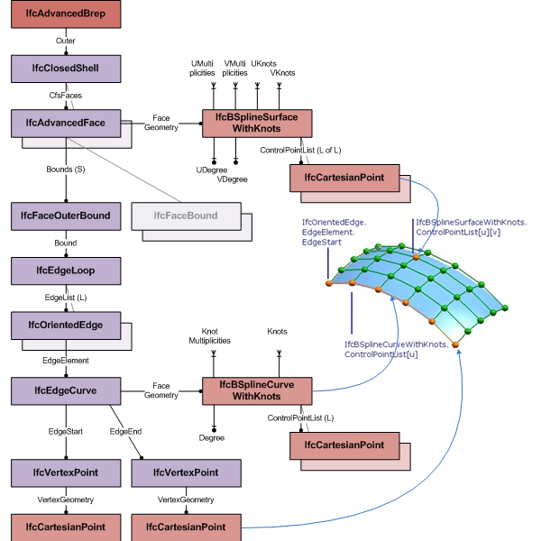

EXPRESS-G diagram
EXPRESS-G diagram| Représentation frontière avancée | |
| Boundary Representation - NURBS |
An advanced B-rep is a boundary representation model in which all faces, edges and vertices are explicitly represented. It is a solid with explicit topology and elementary or free-form geometry. The faces of the B-rep are of type IfcAdvancedFace. An advanced B-rep has to meet the same topological constraints as the manifold solid B-rep.
NOTE The advanced B-rep has been introduced in order to support the increasing number of applications that can define and exchange B-rep models based on NURBS or other b-spline surfaces.
 |
Figure 281 illustrates use of IfcAdvancedBrep for boundary representation models with b-spline surfaces. The diagram shows the topological and geometric representation items that are used for advanced B-reps, based on IfcAdvancedFace. |
|
Figure 281 — Advanced Brep |
NOTE Entity adapted from advanced_brep_shape_representation defined in ISO 10303-514.
HISTORY New entity in IFC4
Informal Propositions:
XSD Specification:
<xs:element name="IfcAdvancedBrep" type="ifc:IfcAdvancedBrep" substitutionGroup="ifc:IfcManifoldSolidBrep" nillable="true"/>EXPRESS Specification:
| ENTITY IfcAdvancedBrep |
| SUPERTYPE OF(IfcAdvancedBrepWithVoids) |
| SUBTYPE OF IfcManifoldSolidBrep; |
| WHERE |
|
| END_ENTITY; |
Formal Propositions:
| HasAdvancedFaces | : | Each face of the advanced B-rep shall be of type IfcAdvancedFace. |
Inheritance Graph:
| ENTITY IfcAdvancedBrep |
| ENTITY IfcRepresentationItem |
| INVERSE |
|
| ENTITY IfcGeometricRepresentationItem |
| ENTITY IfcSolidModel |
| DERIVE |
|
| ENTITY IfcManifoldSolidBrep |
|
| ENTITY IfcAdvancedBrep |
| END_ENTITY; |
Examples:
 Link to this page
Link to this page